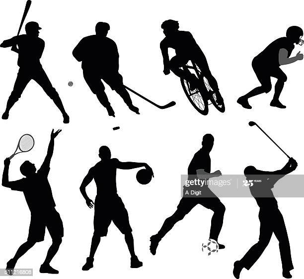

Bien que le sport soit très bon pour la santé, l’activité physique et l’alimentation sont à la fois des actes habituels que nous réalisons au quotidien, mais aussi des clés essentielles pour maintenir un bon état de santé ou le recouvrer. Les professionnels de santé nous alertent sur l’évolution de nos modes de vie. La sédentarité et la réduction de l’activité physique font peser désormais des risques sur notre santé. Notre corps a besoin de bouger quel que soit notre âge, une activité physique régulière, si possible quotidienne est bénéfique. Or nous nous déplaçons de plus en plus loin et souvent en voiture. Toutes les études le démontrent que bien manger et faire du sport sont des facteurs de protections contre certaines maladies. Ils sont aussi des moyens efficaces de diminuer les risques de prise de poids. En choisissant le contenu de nos assiettes et en organisant notre mode de vie, en adoptant des comportements favorables, nous devenons des acteurs de notre santé. Quelques repères pour les activités physiques : 30 mn pour les adultes et 1 h pour les enfants et les adolescents avec une régularité de tous les jours avec une intensité modérée. Commencer par des activités simples comme prendre l’escalier, descendre un arrêt plus tôt du bus, sortir le chien, jardiner faire ses courses à vélo, accompagner les enfants à l’écoles à pied, faire une ballade en famille. Ces gestes simples sont non contraignants et pour les goûts de tous. Pour faire la quantité d’activité physique suffisante, il existe des solutions multiples conciliables avec tous les modes de vie et tous les emplois du temps, même les plus chargés.
• Marche lente • Laver la vaisselle, repasser, faire la poussière • Bricolage, entretien mécanique • Arroser le jardin • Pétanque, billard, bowling, tennis de table, danse de salon • Marche à pied (d’un bon pas) • Laver les vitres ou la voiture • Passer l’aspirateur • Jardiner léger, ramassage de feuilles • Aérobic • Vélo ou natation voile, golf, aquagym, ski alpin, frisbee • Marche avec dénivelés, randonnée en montagne • Bêcher, déménager • Jogging, VTT, natation rapide, saut à la corde, foot, basket • Volley-ball, sports de combat, tennis, squash, escalade
©copyright myproject-2020